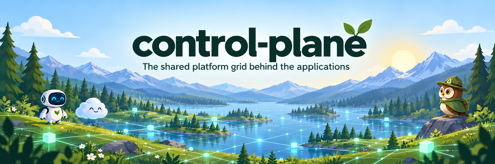
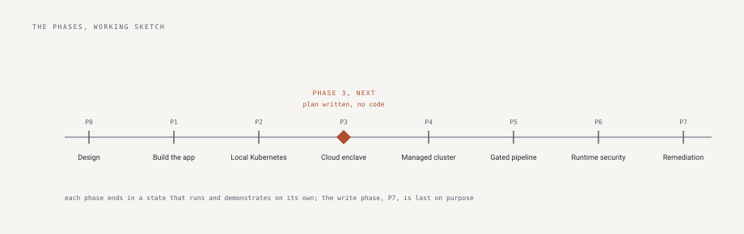

control-plane

control-plane is a security engineering program that one person is building in public with an AI coding agent. The agent writes the code and the documents; the person reviews and approves every change; every decision and every mistake is recorded. It has three parts.
build-doctrine is the rulebook the program is built under: standards for letting an AI agent write code that a person is responsible for, with the tools that check any repository against them. It carries:
- Rules where each one names the problem behind it and the check that catches it.
- A scorer that grades any repository from 0 to 5 on each rule.
- A vetting tool that examines a dependency before it is adopted.
- A project template with the checks already switched on.
- Built against seven frameworks: OWASP Top 10, OWASP API Security Top 10, OWASP Top 10 for LLM Applications, STRIDE, NIST SSDF, OWASP ASVS, and SLSA. Eighty items mapped to the rules, gaps listed.
manifest-identity is the application built under those rules. It keeps two records about every identity in a cloud estate, what access it holds and what access a named person authorized, and shows every difference between them. It has:
- Seven providers read from their own export files: AWS, GitHub, Kubernetes, Google Cloud, Azure and Entra, Okta, Active Directory. Any other provider through a table.
- Review campaigns that put each difference in front of the person responsible for it, one decision at a time.
- Twenty findings, each explaining itself: unused identities, keys past their age, administrators by capability, trusts open to the world.
- more than 400 tests, 84 recorded decisions, 34 controls proven by mutation, five outside ratings, a release verifiable with one command.
The cloud deployment is the part still to build, phases 3 to 7: the application run in AWS the way the rulebook says. It will have:
- An AWS organization defined as code.
- One account that persists; the workloads inside it torn down and rebuilt daily, so recovery is routine.
- Deploys without stored credentials; the image promoted by digest.
- The pipeline tested by planting a flaw; the cloud's own monitoring switched on.
- The ability to change a cloud account comes last, earned by everything before it. Each phase's plan is published before the work.
secure-expense-mvp is a small application built before the program as a learning exercise, kept as a reference.
The parts
manifest-identity
Governance for the identities nobody owns: what each identity holds, read from seven providers' own exports and derived from history rather than stored as a status, beside what a named person said it may hold, and every difference put in front of the person who can answer it. Building in motion: the decision record and the record of what the coding agent got wrong, kept on purpose.
secure-expense-mvp
A small expense tool, finished and hardened: every request-path gate tied to the failure it prevents, mutation-tested, deliberately complete.
build-doctrine
The doctrine: standards where every rule records the incident that produced it, and the promotion path from human check to automated gate.
aws-platform
Arrives with Phase 3: generic Terraform modules for an organization, its baseline, account vending, and keyless deploy federation.
The program documents
The things one repository cannot answer for, kept here:
- The plan for the current phase, written and published before the work starts, so a change of plan is a recorded decision and not a quiet edit.
- Monitoring: what is watched at each layer, what signal it gives, and who hears it. A layer with nothing watching it says so.
- Recovery: what can be rebuilt from code and what is real state that must be backed up. Each recovery drill carries the date it last ran and goes stale on a schedule.
- Pipelines: how every repository blocks a bad change, and how the tools that do the blocking are themselves verified before they run.
The method
- Design first. The plan is public before the first line of code.
- Every change is a pull request: the agent proposes under its own identity, the checks must pass, a human must approve, and the merge is the receipt.
- Every figure in a document is checked against the running system, or a test fails.
- Every mistake becomes a rule, and the second time a fix is done by hand it becomes automation.
- What was left out on purpose is written down beside what was built.
The arc

- Design, before any code
- The application: the observed half in twelve review-gated subphases, then the authorized half in fourteen more
- Local Kubernetes: admission, network policy, identity
- The cloud enclave as code: the plan is written, no code yet
- Managed Kubernetes
- The security-gated pipeline, proven by a planted flaw
- Runtime detection and response
- Human-triggered remediation, last, because write access is earned